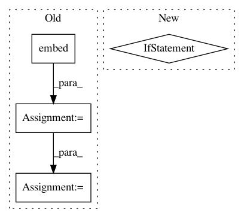

404393b5ea2eab19b62bdbc609f969fd4fc99a96,basenji/seqnn.py,SeqNN,downcast,#SeqNN#Any#Any#,239
Before Change
// replace model
if self.embed is not None:
preds = self.embed(sequence)
preds = tf.cast(preds, dtype)
self.embed = tf.keras.Model(inputs=sequence, outputs=preds)
elif self.ensemble is not None:
preds = self.ensemble(sequence)
After Change
model = self.embed
elif self.ensemble is not None:
model = self.ensemble
elif head_i is not None:
model = self.models[head_i]
else:
model = self.model
In pattern: SUPERPATTERN
Frequency: 3
Non-data size: 4
Instances
Project Name: calico/basenji
Commit Name: 404393b5ea2eab19b62bdbc609f969fd4fc99a96
Time: 2020-11-10
Author: drk@calicolabs.com
File Name: basenji/seqnn.py
Class Name: SeqNN
Method Name: downcast
Project Name: dpressel/mead-baseline
Commit Name: 78eba7b3f82b8420deac3cd28318dbfead0f9b9e
Time: 2018-10-30
Author: dpressel@gmail.com
File Name: python/baseline/pytorch/seq2seq/model.py
Class Name: Seq2SeqModel
Method Name: encode
Project Name: dpressel/mead-baseline
Commit Name: ccf28747f4f037d7b7dd38756d291620d4a4ce9b
Time: 2020-04-26
Author: dpressel@gmail.com
File Name: baseline/tf/lm/model.py
Class Name: LanguageModelBase
Method Name: create